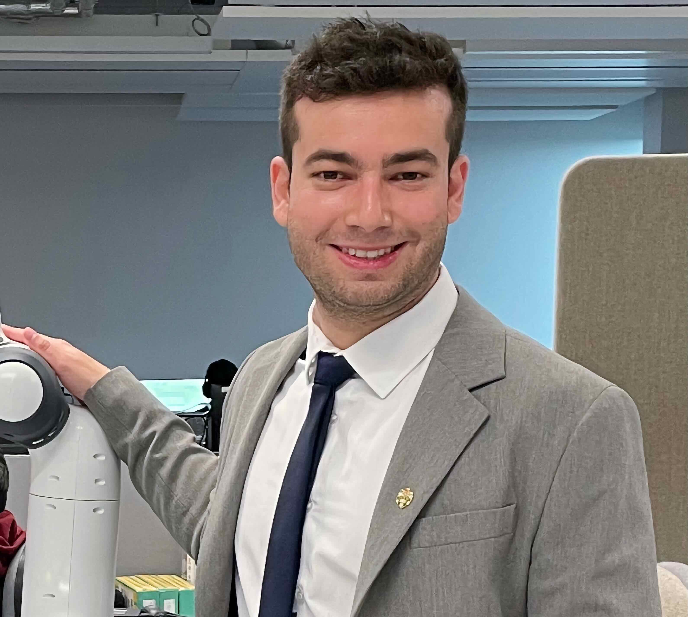

IROS 2023 IPPC Workshop Schedule
Workshop on Integrated Perception, Planning, and Control for Physically and Contextually-Aware Robot Autonomy
Room: 360 (SuWT13.1)
09:00 - 09:30

Kostas Alexis
Norwegian University of Science and Technology
Norwegian University of Science and Technology
Resilient Autonomy in Perceptually-degraded Environments
Abstract: Enabling autonomous robots to access, navigate and broadly operate in perceptually-degraded industrial or natural environments represents a strenuous and daunting challenge. Motivated by this fact, this talk focuses on methods and systems toward instilling resilient autonomy - using both classical and data-driven methods - across diverse robot configurations with the aim to seamlessly access and operate anywhere and subject to any conditions. Results and experiences from the victorious journey of Team CERBERUS in the DARPA Subterranean Challenge are presented, lessons learned are outlined and a multitude of experimental studies from follow-up research activities are discussed.
09:30 - 10:00

Efi Psomopoulou
University of Bristol
University of Bristol
Physically Interactive Robots
Abstract: TBC
Poster Session 1
- "LIVE: Lidar Informed Visual Search for Multiple Objects with Multiple Robots" by Ryan Gupta, Minkyu Kim, Juliana Rodriguez, Kyle Morgenstein, and Luis Sentis
- "Cooperative UAV Autonomy of Dronument: New Era in Cultural Heritage Preservation" by Pavel Petracek, Vit Kratky, Matej Petrlik, and Martin Saska
- "Semantic-SuPer: Employing Semantic Perception for Endoscopic Tissue Identification, Reconstruction, and Tracking" by Shan Lin, Jingpei Lu, Florian Richter, and Michael Yip
- "Dynamic Object Avoidance using Event-Data for a Quadruped Robot" by Shifan Zhu, Nisal Perera, Shangqun Yu, Hochul Hwang, and Donghyun Kim
- "Enhancing Autonomous Reinforcement Learning: A Demonstration-Free Approach via Implicit and Bidirectional Curriculum" by Daesol Cho, Jigang Kim, Hyoun, and Jin Kim
- "Multi-Modal Semantic Perception Using Bayesian Inference" by Parker Ewen, Gitesh Gunjal, Hao Chen, Anran Li, Yuzhen Chen, and Ram Vasudevan
- "Cooperative Probabilistic Trajectory Forecasting under Occlusion" by Anshul Nayak and Azim Eskandarian
- "Shape Reconstruction of Soft, Continuum Robots using Differentiable Rendering with Geometrical Shape Primitive" by Fei Liu and Michael Yip
- "PyPose v0.6: The Imperative Programming Interface for Robotics" by Zitong Zhan, Xiangfu Li, Qihang Li, Haonan He, Abhinav Pandey, Haitao Xiao, Yangmengfei Xu, Xiangyu Chen, Kuan Xu, Kun Cao, Zhipeng Zhao, Zihan Wang, Huan Xu, Zihang Fang, Yutian Chen, Wentao Wang, Xu Fang, Yi Du, Tianhao Wu, Xiao Lin, Yuheng Qiu, Fan Yang, Jingnan Shi, Shaoshu Su, Yiren Lu, Taimeng Fu, Karthik Dantu, Jiajun Wu, Lihua Xie, Marco Hutter, Luca Carlone, Sebastian Scherer, Daning Huang, Yaoyu Hu, Junyi Geng, Chen Wang
- "Monocular 3D Object Detection with Viewpoint-Invariant Inter-Object Estimation for Better Contextual Behavior Understanding" Minghan Zhu
- "Gripper-Aware GraspNet: End-Effector Shape Context for Cross-Gripper Generalization" Alina Sarmiento, Anthony Simeonov, and Pulkit Agrawal
- “Inflatable Fingertips with Stretchable Pressure Sensors for Adaptive Grasping and Manipulation,” by Hongyang Shi and Nanshu Lu
Coffee Break
Perceiving to Interact, Interacting to Perceive
Abstract: Humans and other biological agents interact with the environment to obtain the information for their tasks. Differently, robots are “afraid” of contacting the environment, strongly relying on passive modes of information gathering, which restrict their capabilities. In this talk, I will present my past and recent work to endorse robots with interactive capabilities to perceive their environment, for example, to find objects of interest and manipulate them. I will also present our recent effort to develop an affordable robotic hand that is friendly with the type of behavior my lab wants to create in robots: full of contact and where learning is enabled by physical interactions.
11:30 - 11:50

Peter Karkus
NVIDIA
NVIDIA
Invited PhD Talk: Differentiable Robotics: Integrated Perception, Planning, and Control with Differentiable Algorithm Networks
Abstract: What architecture will scale to human-level robot intelligence? Classical perception-planning-control methods often assume perfect models and tracktable optimization; learning-based methods are data hungry and often fail to generalize. In this talk I will introduce the Differentiable Algorithm Network (DAN), a compositional framework that fuses classical algorithmic architectures and deep neural networks. A DAN is composed of neural network modules that each encode a differentiable robot algorithm, and it is trained end-to-end from data. I will illustrate the potentials of the DAN framework through applications including visual robot navigation and autonomous vehicle control.
Panel Discussion: Robot Perception for Navigation and Manipulation
Abstract: Robots capable of autonomous navigation and manipulation with advanced perception and decision-making skills offer tremendous potential to assist people with challenging and repetitive tasks. Robots sharing the same environment with people need novel semantic planning objectives that integrate perception and planning at a high level to generate contextually relevant robot behavior. This panel discussion explores the cutting-edge field of robot perception and its critical role in enabling robots to navigate and manipulate objects in complex environments. Coline, Efi, Peter, and Roberto will discuss the challenges and emerging opportunities. The session will be chaired by Nikolay Atanasov.

Coline Devin
Google DeepMind
Google DeepMind
Efi Psomopoulou
University of Bristol
University of Bristol
Peter Karkus
NVIDIA
NVIDIA
Roberto Martin-Martin
University of Texas at Austin
University of Texas at Austin
Chair

Nikolay Atanasov
University of California San Diego
University of California San Diego
Lunch Break
Interactive Robotic Object Perception and Manipulation
Abstract: Robotic manipulation of diverse objects in unstructured environments remains a major challenge in the field of robotics. Humans adeptly search, grasp, and manipulate objects across a variety of challenging scenarios, whereas current state-of-the-art robotic systems fail to achieve human-level proficiency. The overarching goal of my research is to develop computational learning models that enable robots to perceive the world, acquire new skills, and perform dexterous manipulation at or beyond human capabilities. In this workshop, I will present recent progress from my research group toward the research goal. Specifically, I will discuss (1) object searching and grasping under occlusion and clutter and (2) interactive manipulation for object segmentation. Both projects aim to integrate perception and decision-making to address key challenges in robotic perception and manipulation.
14:00 - 14:30
Coline Devin
Google DeepMind
Google DeepMind
Transformer-based policies for multi-task robotic manipulation
Abstract: Robot learning has been difficult to scale due to cost of obtaining data for each additional task. This talk will discuss how we can instead benefit from broad, robot-agnostic knowledge about the world and then improve by reducing the cost of acquiring each next task.
Poster Session 2
- "Autonomous Power Line Inspection with Drones via Perception-Aware MPC" by Jiaxu Xing, Giovanni Cioffi, Javier Hidalgo-Carrió, and Davide Scaramuzza
- "iPLAN: Intent-Aware Planning in Heterogeneous Traffic via Distributed Multi-Agent Reinforcement Learning" by Xiyang Wu, Rohan Chandra, Tianrui Guan, Amrit Singh Bedi, and Dinesh Manocha
- "Degradation-Aware Point Cloud Sampling in Robot Ego-Motion Estimation" by Pavel Petracek, Nikhil Khedekar, Morten Nissov, Kostas Alexis, and Martin Saska
- "Imitative Models for Passenger-Scale Autonomous Off-Road Driving" by Nitish R Dashora (University of California, Berkeley)*; Sunggoo Jung (KAIST); Dhruv Shah, Valentin Ibars, Osher Lerner, Chanyoung Jung, Rohan A Thakker, Nicholas Rhinehart, and Ali Agha
- "HiFaive: Learning Human-inspired Dexterous Manipulation with the Faive Robotic Hand" by Erik Bauer, Elvis Nava, and Robert Kevin Katzschmann
- "Hide and Seek with Visibility Constraints using Control Barrier Functions" by Shumon Koga, Minnan Zhou, Nikolay Atanasov, and Dimitra Panagou
- "Greedy Perspectives: Dynamic Multi-Drone View Planning for Collaborative Coverage" by Krishna Suresh, Aditya Rauniyar, Micah Corah, and Sebastian Scherer
- "Risk-Aware Multi-Robot Target Tracking with Dangerous Zones" by Jiazhen Liu, Peihan Li, Yuwei Wu, Vijay Kumar, and Lifeng Zhou
- "General In-Hand Object Rotation with Vision and Touch" by Haozhi Qi, Brent H Yi, Sudharshan Suresh, Mike Lambeta, Yi Ma, Roberto Calandra, and Jitendra Malik
- "Hierarchical Multi-modal Quadruped Navigation for Experience-informed Rebar Grid Traversal" by Max Asselmeier, Eohan George, Patricio A Vela, and Ye Zhao
- "Bridging Real-to-Sim Gaps through Online Stiffness Optimization with Perception-Enabled Residual Mapping" by Xiao Liang, Fei Liu, Yutong Zhang, and Michael Yip
- “Aligning Robot Navigation Behaviors with Human Intentions and Preferences,” by Haresh Karnan
Coffee Break
15:30 - 16:00

Hyeonbeom Lee
Ajou University
Ajou University
Autonomous Navigation of Outdoor Mobile Robot Using Monocular Depth Estimation
Abstract: This study presents a viable approach for outdoor mobile robots by integrating perception, planning, and experimentation. For the perception of mobile robots, we develop a real-time depth estimation algorithm that is gaining interest as a viable alternative to large and heavy sensors, such as LiDAR (light detection and ranging) sensors. To achieve this goal, we first designed a depth estimation network for a wide-FOV stereo camera. Then, we estimated the depth image using a convolutional neural network and improved the accuracy using stereo-matching. By exploiting our proposed planning algorithm with an optimization approach, we conducted experiments using a real drone and ground mobile robot in an outdoor environment to prove the performance. The experimental results are analyzed, and we further discuss precautions for operating outdoor mobile robots.
Interactive Robot Perception and Learning for Mobile Manipulation
Abstract: TBC
Invited PhD Talk: Human-like Mobility to Deploy Robots... Everywhere!
Abstract: Deploying intelligent mobile robots in the real world has been a longstanding goal in robotics and AI. These environments are often dense, heterogeneous, constrained, and unstructured. In this talk, I'll discuss my research on enabling intelligent mobile robots to navigate such complex environments by instilling human-like mobility in robots. In particular, my talk will describe advanced computer vision and machine learning techniques for improved tracking of dynamic entities in dense traffic. It will also introduce an innovative model for estimating drivers' risk preferences by conceptualizing traffic as an undirected dynamic graph and applying the risk estimation algorithm to resolve conflicts between drivers at unsignalized intersections and during merging. Lastly, the talk will offer insights into the creation of simulators, tools, and datasets to spur further research, providing the audience with a comprehensive understanding of the advancements and innovations in intelligent mobile robot navigation.
Panel Discussion: Perception-Aware Robot Navigation and Manipulation
Abstract: Recent advances in artificial perception enable robots to have semantic understanding and contextual awareness of their surroundings. Similarly, recent years have seen significant progress in decision-making for autonomous navigation and manipulation in complex situations. However, the gap between robot perception and decision-making remains large, as many techniques continue to rely on separation principles between perception, planning, and control. This panel discussion gathers experts at the forefront of this dynamic domain to explore the latest developments, challenges, and opportunities in perception-driven robot navigation and manipulation. Changhyun, Georgia, and Rohan will be talking about this gap and share their insights about the future direction of perception-aware robot navigation and manipulation. The session will be chaired by Rafael Papallas.
Chair

Rafael Papallas
University of Leeds
University of Leeds